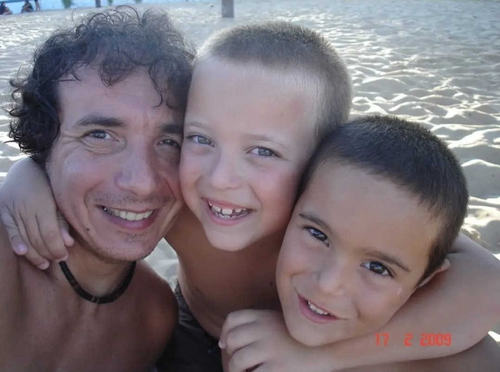

Página Web de práctica correspondiente a la materia Laboratorio de Computación II
Presentación
En esta primera página de prueba, les cuento un poco de mi y porqué me interesó la carrera.
Soy Enrique Marconi Favini, alumno de la Tecnicatura Universitaria en Programación de la UTN.
La materia que enseña HTML es Laboratorio de Computación II.
Será cursada en el segundo cuatrimestre del año para lograr aprender la utilización del lenguaje para confeccionar páginas Web.
Nací el 18 de enero de 1966 (57 años) y dos hijos maravillosos que me hacen sentir orgulloso cada día de mi vida. Sus nombres son Gianluca (el mayor) y Luigi (el menor).
Me recibí de Analista de Sistemas en una carrera terciaria en el año 1994.
Trabajé en área de informática en el Correo Argentino durante unos años hasta que dicha área cerró y se transladó a Buenos Aires.
Realicé algunos sistemas en los lenguajes Visual Basic y Visual FoxPro que fueron implementados y utilizados en algunas áreas del correo.
Cuando el área sistemas de la Región Este del Correo Argentino cerró, pasé a trabajar en la Administración, en el área Facturación Grandes Clientes.
Me interesó mucho cursar la carrera de la Tecnicatura Universitaria en Programación para poder actualizarme, puesto que al dejar de trabajar en el área
de sistemas mis conocimientos han quedado desactualizados y me gustaría adquirir nuevos conocimientos.
El incentivo de aprender es mucho más inspirador e interesante al estar cursando la carrera con mis dos hijos. Un regalo de Dios.
Páginas Favoritas
A continuacíon se detalla una lista de las páginas que más visito a diario:
Lista Desordenada
Lista Ordenada
- Abrir CVG UTN
- Abrir GitHub
- Abrir página Club Atlético Rosario Central
Galería de Imagenes Familiares
